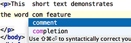

Use Basic Completion (&shortcut:CodeCompletion;) for completing words in text and comments in files of many different types.
All the words from the current file that start with the typed prefix will appear in the lookup list.
